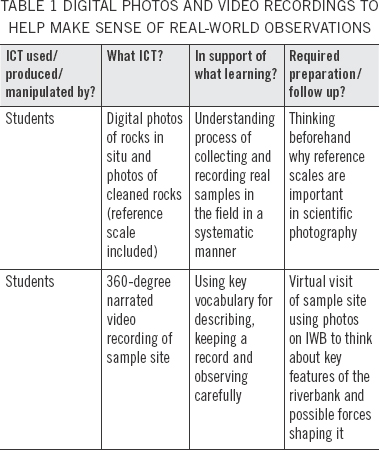
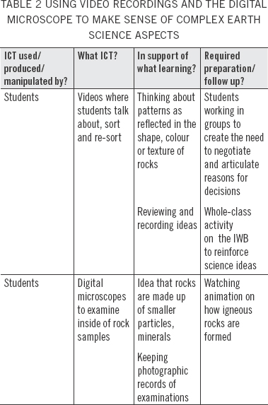
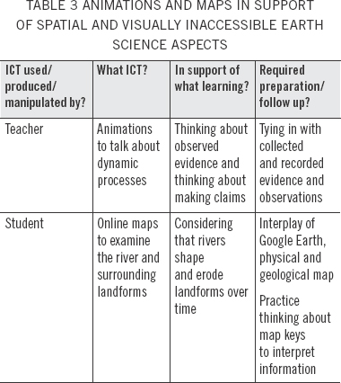

Teaching landforms and erosion
KATHRIN OTREL-CASS, BRONWEN COWIE and ELAINE KHOO
KEY POINTS
• Years 7/8 students used information and communication technologies (ICTs) to help examine and document rocks they collected during a field trip, and to make sense of them as evidence of earth science processes.
• The ICTs included videos, photos, animations and digital microscopes, as well as Internet resources, such as Google Earth.
• Using this technology helped students overcome some of the challenges inherent in earth sciences—visualising large geographical areas and connecting real-life observations with long-term geological processes.
• Integrating the ICTs into the learning experience expanded the ability of students to think and learn like scientists (Nature of Science strand) and understand Planet Earth and Beyond.
• Effective use of ICTs requires technological pedagogical content knowledge (TPCK)—to plan the learning experiences and how the ICTs will support learning.
Two Years 7/8 teachers planned, implemented and reflected on teaching a unit about erosion and landforms with the support of ICT tools. They used videos, photos, animations and digital microscopes—as well as Internet resources, such as Google Earth and other maps—to help the students work and think like an earth scientist.
The Planet Earth and Beyond strand in the Science learning area of The New Zealand Curriculum (Ministry of Education, 2007) emphasises the importance of students’ understanding the dynamic and interacting systems and processes of the Earth, and other aspects of the solar system, if they are to make informed decisions about the protection and wise use of resources (p. 28). This emphasis on “systems science” is new to the curriculum and is likely to pose a challenge for teachers. To help students appreciate and learn about Earth materials and processes, teachers will need to be able to access and use strategies that address the conceptual challenges in understanding the long- and short-term processes involved in shaping the Earth (Blake, 2004). This article is based on a two-year Teaching and Learning Research Initiative (TLRI) project that explored how the use of ICTs offers one way to achieve this.
The Science Classroom Investigations of the Affordances iN Teaching with ICT (SCIAnTICT) project explored the potential of ICTs for teaching and learning science in primary classrooms. Affordance is a term that is used to describe the possibilities ICT-rich learning environments can offer to teaching and learning (Webb, 2002). In the first year the research focused on ICTs that the two teachers (Tina and Clara) involved in this project were already using. It found that visual tools, such as videos, photos or digital microscope images, were useful to support and scaffold student learning (Otrel-Cass, Cowie, & Khoo, 2009). Building on these findings, the second year of the project focused on how teachers could address specific content challenges, like those experienced in earth science, through the use of ICTs.
This article reports on Tina and Clara’s reflections on teaching an earth science unit with their Years 7/8 students. The decision to teach landforms and erosion came about because the teachers were interested in exploring the idea of dynamic processes, which is new in the Planet Earth and Beyond strand (Ministry of Education, 2007, p. 28). This inquiry focused on how landforms and rocks are formed, transported and shaped. Tina and Clara were also interested in encouraging students to explore what it means to be thinking and working like a scientist.
The unit took place over seven weeks. The teachers spent some time in class preparing their students for a field trip to the local river. There, the students examined the riverbank and collected rocks, which they analysed back in class to consider where the rocks might have come from and what processes might have shaped them. The teachers anticipated that examining and thinking about rocks of different colours, sizes, textures and shapes would help students to develop a sense of what it means to think, learn and work like an earth scientist. The unit concluded with a presentation by the students, in front of the whole class and parents, to explain the “story of their rocks”.
Scientists typically operate on the assumption that the natural world is underpinned by patterns that can be understood through carefully constructed inquiry (Abd-El-Khalick, 2009). Abd-El-Khalick points out that when scientists work with evidence, they take care to match their claims with observations, they carefully compare observation-based evidence with that gained through handling or manipulating evidence and they contrast controlled and uncontrolled data collection. Elements of these ideas are apparent in The New Zealand Curriculum (Ministry of Education, 2007), which emphasises the Nature of Science (NOS). The NOS strand involves thinking and learning about what it means to do science and how to understand the ways in which scientists interpret the natural world, in order to increase student interest and contribute to students becoming scientifically literate participants who participate in evidence-based decision making (Driver, Leach, Millar, & Scott, 1996).
The Planet Earth and Beyond strand foregrounds the need for students to understand the interconnecting systems and processes of the Earth, including how oceans, the atmosphere and solid Earth function, along with the interactions between physical and living systems (Ministry of Education, 2007, p. 28). Research concerned with earth science education has long highlighted that earth scientists are challenged with understanding aspects of the natural world, such as geological time spans and the complexity of Earth processes, and how to make sense of real-world observations and overcome spatial challenges (Kastens et al., 2009). For example, when earth scientists make their observations in the field, they need to have an understanding of the processes that create the landforms in the first place, such as volcanism or mountain building. Further, they need to consider what has since acted on the landforms; for example, weathering, erosion or other dynamic processes, such as plate movements. Supporting students to think like an earth scientist was a challenge the teachers in the two classrooms took on.
The New Zealand Curriculum recommends that e-learning or the use of ICTs can open up and provide new and different ways of learning and teaching (Ministry of Education, 2007, p. 36). However, teachers using ICTs need to negotiate a balance between technology, pedagogy and content. That is, they need to develop and deploy what Mishra and Koehler (2006) term technological pedagogical content knowledge (TPCK). By this they mean the knowledge that teachers need to deploy a particular technology to represent and/or support their students’ learning of a particular concept. Not every ICT tool maintains its value across diverse classroom settings and across different activities. Hence, teacher and student knowledge about the functionality or affordance (Webb, 2002) of a particular technology shapes how they use it. The way they use an ICT influences whether or not it supports learning over and above “usual” teaching approaches. All this requires that teachers know about the conceptual challenges students may face, as well as students’ prior knowledge.
The teaching episodes presented here illustrate three ways the teachers used ICTs to support students working with rocks as evidence to think about dynamic earth science processes. The teachers explored various technological pedagogical strategies to connect learning opportunities to engage their students in a scientific inquiry about landforms and erosion. How the teachers prepared for some of these activities is also described.
Field experiences are said to be pedagogical strategies that enhance learning in earth science because they support the idea that multiple processes act on landforms, shaping and changing its appearance over time (Tal, 2001). Careful observation from a river’s edge reveals the current rolling along grains of sand or small pebbles. This observation can be used to introduce two key ideas. First, that this process transports materials along the riverbed and, second, that this happens along the whole length of the river, albeit for bigger rocks it happens on a longer and larger scale. While the learning experiences students undergo in the field can allow them to get a feel for the complexity and challenges that earth scientists face, careful preparation is required to ensure they gain these insights.
Tina and Clara needed to prepare their students for field-trip observations. To do this the teachers visited the riverbank before the field trip to identify a good spot and to familiarise themselves with the environment. They took photos that they used in class to highlight and discuss key features of the site so that the students could look out for these when they were on the field trip. The interactive whiteboard (IWB) allowed the teachers to display large images of the photos, which they could annotate as part of a whole-class discussion. In this way, the class was able to “virtually” visit the location in preparation for the field trip. To alert the students to some of the evidence-collecting techniques they needed to use, Tina showed her students a photo of a rock and asked them to guess how big it was. The image was shown on the IWB and students’ estimates of size varied greatly. Then, Tina showed the students a second photo of the same rock, but this time showing a spade as a reference size. The students were obviously surprised by what they saw. Tina pointed out that unless you include a known object or measure, any judgements based on photos could be inaccurate or misleading, thereby highlighting the importance of this strategy when scientists collect, measure and record evidence about rocks in situ.
At the site the teachers allocated the students to groups and directed them to record a narrated video about the location. These acted as a starting point for the students to describe and talk about what they could see on the riverbank and as a resource for when they were back in the classroom. The teachers wanted the students to think about the difference between the opposite sides of the riverbank, record significant features and practise talking about their observations. Producing a narrated video required that the students focus their attention, observe carefully and think about the language they could use to talk about what they saw. The videos served as sources of information when the students had to fill out a sheet about their observations. The students were able to review their selections and explanations. The teachers also asked their students to select and take photos of a rock they intended to study in more detail. They did this to provide a permanent record of where the rocks had been deposited. Later, after the rocks had been cleaned, the students took another set of photos with a reference scale.
Clara considered that going on the field trip, taking photos, making video recordings and collecting rocks had been motivational for her students. She felt that the students collecting evidence for themselves was of value but pointed out that the students needed some background knowledge to do this successfully. This supports the notion that earth scientists need considerable understanding when they try to create and critique first impressions in the field (Kastens et al., 2009). Table 1 highlights the value of videos and photos taken during the field trip.

Both teachers established that the students had very little prior knowledge about what landforms were and how they were shaped and formed. In this unit the teachers wanted their students to learn that: the shape and size of a rock can provide clues about whether and how it has been transported; the colour of a rock may vary from the outside to the inside if it has been weathered; and looking at the texture of a rock can provide information about what type it is and how it has been formed. Many of the rocks at the river were round, which suggested they had been shaped by being tumbled along as they were transported in the river.
Collecting, examining and interpreting the rocks they found at the riverbank provided a hands-on and focused way for students to begin to develop their knowledge. In the classroom the students worked in groups to sort their sample rocks according to colour, shape and size. They reflected on their selections by videoing each other justifying why they had made them, at times re-recording their descriptions. Using the video recordings during the group activity meant the students could practise talking, recording and reviewing their ideas. Clara followed up on this activity by asking the students to categorise photos of their rocks (displayed on the IWB) taken at the riverbank according to various physical features. She reported that the group and whole-class activities had complemented each other and were meaningful to the students because “they used visual records of their evidence as well as the real samples and practised talking about their ideas”.
The students broke open their rocks to look at their inside colour and texture and to compare this with their earlier descriptions. Most students found that the inside colour differed significantly from that of the outside. They recorded this observation by taking photos. As a next step, the students examined the new face of their rocks under a digital microscope. This allowed them to take further and more detailed photos. They were able to see more clearly that their rocks were not just “rocks”, but that they consisted of tiny particles and minerals. Being able to identify crystalline features, especially by looking through the digital microscope, helped students learn that rocks are made from smaller parts.
Examinations of the outside features of their rocks helped students to think about the dynamic processes involved in transporting and shaping them. Examining the inside of the rocks helped the students to gain a sense of their origin and what they were made of. The use of video, photos and the digital microscope required the students to inspect the rock samples in a systematic way, as well as providing practice in talking in a manner akin to earth scientists (see Table 2).

However, earth scientists build their findings on their existing understanding about Earth materials and how they are formed, therefore the essential next step was supporting the students with simple animations of the rock cycle to inform their analysis of the microscope images.
Both teachers supported and reinforced the idea that rocks were products of Earth’s processes by showing the students Internet-based animations about how rocks are formed. The teachers honed in on the parts of the animations that showed how igneous rocks are formed, and in particular how volcanic rocks are formed, because most of the rocks the students collected came from nearby volcanoes. Tina, reflecting on this activity, explained that she had used this animation to reinforce how these rocks were formed in the hope the students would make the connection that the river had eroded and transported volcanic material. Tina also showed her students an animation about river currents moving materials along the riverbed. She commented that both animations provided some background information about dynamic processes that were hard or impossible to observe directly. Tina thought that in this way the animations “help the students to think beyond the surface of the water”, supporting them making a connection between processes and products.
Spatial reasoning skills are important to understanding earth science concepts (Petty & Rule, 2008). In order to address some of the spatial challenges the students were facing in making sense of landforms and how these are shaped, the teachers used a variety of Internet-based maps, some of which were posted as resources in the class blogs. Students had access to a physical map of the North Island, the geological map of New Zealand and to Google Earth.
Google Earth provides realistic imagery using satellite or aerial photography. Tina thought that Google Earth gave the students a “three dimensional bird’s eye view of a geographical area that allowed them to consider specific details, such as elevation and even dynamic features”. The students were able to see the white water in the image of their river, which indicated turbulence. This helped to reinforce the idea that a river is an erosional force. Although not all of the students had used Google Earth before, its general ease of use and ability to accommodate queries by users (Schultz, Kerski, & Patterson, 2008) allowed students in both classes to inspect the river in detail, and to see it as a whole. They were able to identify features characteristic to different locations, such as fewer bends in steeper terrain and wider meanders further downstream. This provided them a unique insight into the specifics of their river.
Geological maps show the rocks that can be found on the surface of the Earth, typically by using different colours and shading. Clara thought that her students had no difficulty using the geological map of New Zealand and that it had been a good exercise to ask them to look for more information about where their rocks may have come from using this map. The students had readily concluded that the majority of rocks around the source of their river were volcanic, whereas the map indicated that a majority of the rocks in the area where they had collected their samples were sedimentary. The students concluded that their rocks must have been transported down the river. Tina was really impressed that, after only a few demonstrations, the students were able to make connections between their rock sample type, locate this on the geological map and compare the location with the satellite images from Google Earth to confirm, or dispel, these ideas.
In one instance, some students had found images on the Internet of rocks looking similar to their sample. They checked first where they would find such rock types in New Zealand on the geological map and looked then on Google Earth to find out whether it was possible that the river had run through this area to erode this type of rock. Table 3 shows the ICTs teachers used so that students could overcome potentially complex issues when they were thinking about dynamic river processes.

Strategic use of maps and animations supported talking, thinking and making predictions about where the students believed their rocks had come from and the processes that had acted on them.
Earth science is interpretive in nature and requires specific skills and understandings. These include the ability to see whole systems, think in three dimensions and make sense of field observations (King, 2008). This study illustrates how the intersection of teachers’ pedagogical, technological and content knowledge, their TPCK, was crucial to the design and conduct of the lessons to support student learning specific to rocks, erosion and landforms. The teachers created new learning opportunities by drawing on selected ICTs and the ways they could amplify student learning opportunities.
The ICTs supported students to engage in a meaningful way in this earth science investigation. Animations and maps accessed through the Internet helped students to make sense of their experiences and the real artefacts they had collected. Videos and photos supported the students’ observations during the field trip, and by doing so the teachers were able to meld the demands of the content with the affordances of the technology. Recording their observations through videos and photos enabled the students to bring their field experiences back into the classroom in their own words and through their own eyes. This supported students to make sense of real-life experiences and representations to interpret and infer how dynamic processes, such as erosion, interact with and are responsible for creating and changing surface features of the Earth. The technology prompted the students to stop, look and think about their rocks more carefully and to review and revisit their ideas. The use of these ICTs allowed the teachers to mediate students’ thinking about processes, while keeping a strong link with the evidence that the students had collected, thereby supporting student interest and motivation. However, using photos and videos to enhance learning opportunities required careful preparation in order for them to become a resource for student learning about observation and about documenting evidence.
The teachers selected ICTs that supported and augmented their teaching and the students’ learning. Videos, photos, animations and digital microscopes, as well as Google Earth, were used strategically to enhance student learning about landforms and some of the dynamic processes that form and shape them. Just as usual, the teachers had to plan their teaching carefully, with a clear structure and purpose, and to consider the learning objectives for the science unit. However, in addition they had to think about what the various ICTs could offer to their students, and the skills that the students needed so they could use these tools and resources. The effectiveness of the ICTs the teachers used to support learning about landforms and erosion of rocks depended on more than teachers knowing how to use technology; it also required them knowing how to use it to support the specific learning required for earth science.
The Science Classroom Investigations of the Affordances iN Teaching with ICT (SCIAnTICT) project was funded through the Teaching and Learning Research Initiative during 2009 and 2010.
Abd-El-Khalick, F. (2009). Nature of science in science teaching and learning: The what, the why and the how. Retrieved from http://www.nsse.nie.edu.sg/isec2009/downloads/ISEC2009_Keynote_Fouad.pdf
Blake, A. (2004). Helping young students to see what is relevant and why: Supporting cognitive change in earth science using analogy. International Journal of Science Education, 26(15), 1855–1873.
Driver, R., Leach, J., Millar, R., & Scott, P. (1996). Young people’s images of science. Buckingham, PA: Open University Press.
Kastens, K., Manduca, C. A., Cervato, C., Frodeman, R., Goodwin, C., Liben, L. S. et al. (2009). How geoscientists think and learn. Eos, 90(31), 265.
King, C. (2008). Geoscience education: An overview. Studies in Science Education, 44(2), 187–222.
Ministry of Education. (2007). The New Zealand curriculum. Wellington: Learning Media.
Mishra, P., & Koehler, M. J. (2006). Technological pedagogical content knowledge: A new framework for teacher knowledge. Teachers College Record, 108(6), 1017–1054.
Otrel-Cass, K., Cowie, B., & Khoo, E. (2009). SCIAnTICT— Early findings: Using visual technology in the primary science classroom. Retrieved 23 August 2010, from http://cster.waikato.ac.nz/research/sciantict.shtml
Petty, M. R., & Rule, A. C. (2008). Effective materials for increasing young children’s spatial and mapping skills. Journal of Geoscience Education, 56(1), 5–14.
Schultz, R. B., Kerski, J. J., & Patterson, T. C. (2008). The use of virtual globes as a spatial teaching tool with suggestions for metadata standards. Journal of Geography, 107(1), 27–34.
Tal, R. T. (2001). Incorporating field trips as science learning environment enrichment—an interpretive study. Learning Environments Research, 4(1), 25–49.
Webb, M. (2002). Pedagogical reasoning: Issues and solutions for the teaching and learning of ICT in secondary schools. Education and Information Technologies, 7(3), 237–255.
KATHRIN OTREL-CASS is a senior lecturer at the Centre for Science & Technology Education Research, University of Waikato, with research interests in science education and technology, classroom research and knowledge construction in science education environments.
Email: kathrino@waikato.ac.nz
BRONWEN COWIE is Director of the Wilf Malcolm Institute of Educational Research, University of Waikato with research interests in assessment for learning, ICT in science education and classroom interactions.
Email: bcowie@waikato.ac.nz
ELAINE KHOO is a research fellow at the Wilf Malcolm Institute of Educational Research, University of Waikato, with research interests in pedagogical strategies in technology-based and technology-supported learning environments.
Email: ekhoo@waikato.ac.nz